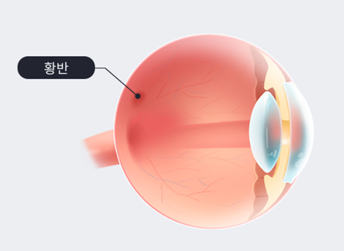
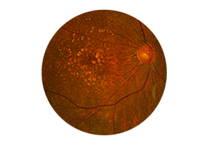
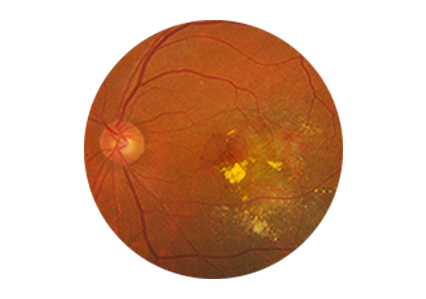
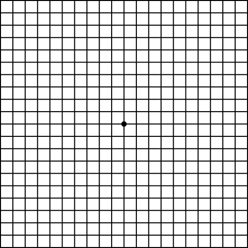
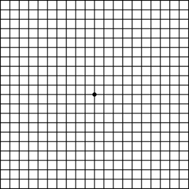
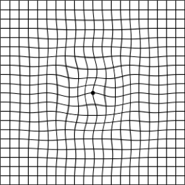
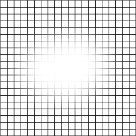
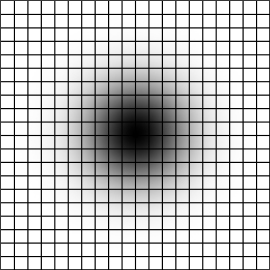

황반의 변성으로 인한 급격한 시력 저하 및 중심 시야 왜곡 유발

눈 조직 중 망막의 중심을 가리키는 황반에 발생하는
변성으로 시력 저하를 유발하는 퇴행성 질환입니다.
나이가 들어 발생한 황반변성은 50세 이상 노년층에서
주로 발생하며 세계적으로 실명을 유발하는 망막질환 중
가장 큰 원인입니다.

노화에 의하여 황반부 조직에 노폐물이 쌓이고, 위축되는 것을 말합니다.
초기에는 서서히 진행되지만 장기적으로 습성 형태로 발전할 수 있으므로
정기적인 진료가 필요합니다.
망막 아래 조직인 맥락막에서 신생혈관이 발생, 황반부에 삼출물, 출혈을 일으켜
중심시력의 저하를 유발합니다. 빠르게 진행하므로 조기에 신생혈관을 억제하는 약물을
안구 내에 주사할 수 있도록 하는 치료가 필요합니다.

황반변성 자가진단 암슬러격자를 검사해보세요.

01. 평소 사용하는 안경이나 콘택트렌즈를 착용한 상태로 검사합니다.
02. 약 50cm 정도 띄우고 암슬러 격자를 봅니다.
03. 한쪽 눈을 가리고 격자의 중심점을 똑바로 쳐다봅니다.
04. 시선을 고정시키고 보이는 현상을 기억합니다.
05. 다른 쪽 눈도 같은 방법으로 검사합니다.
06. 확인된 현상을 아래 그림과 비교해 봅니다.

정상 시야



황반변성 의심 시야
01. 선들이 곧게 보이지 않는다.
02. 작은 네모칸이 모두 같은 크기로 보이지 않는다.
03. 4개의 모퉁이가 모두 보이지 않는다.
04. 비어있거나, 뒤틀리거나, 희미한 부분이 있다.
05. 선이 물결 모양으로 굽이쳐 보인다.
* 위의 내용 중 어느 하나라도 해당사항이 있으면 황반변성을 의심해 볼 수 있습니다.황반변성은 실명의 주요 원인이므로, 정기적인 눈 검진을 통해 황반변성 여부 및
진행정도를 파악하고 적절한 치료를 하는 것이 중요합니다.

월 화 목 금
am 09:00 ~ pm 06:00토 요 일
am 09:00 ~ pm 04:00점 심 시 간
pm 01:00 ~ pm 02:00수요일, 일요일, 공휴일 휴무입니다.
공휴일 있는 주는 수요일 대체진료입니다.